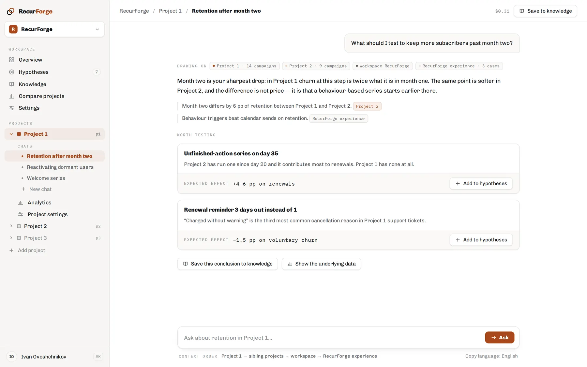
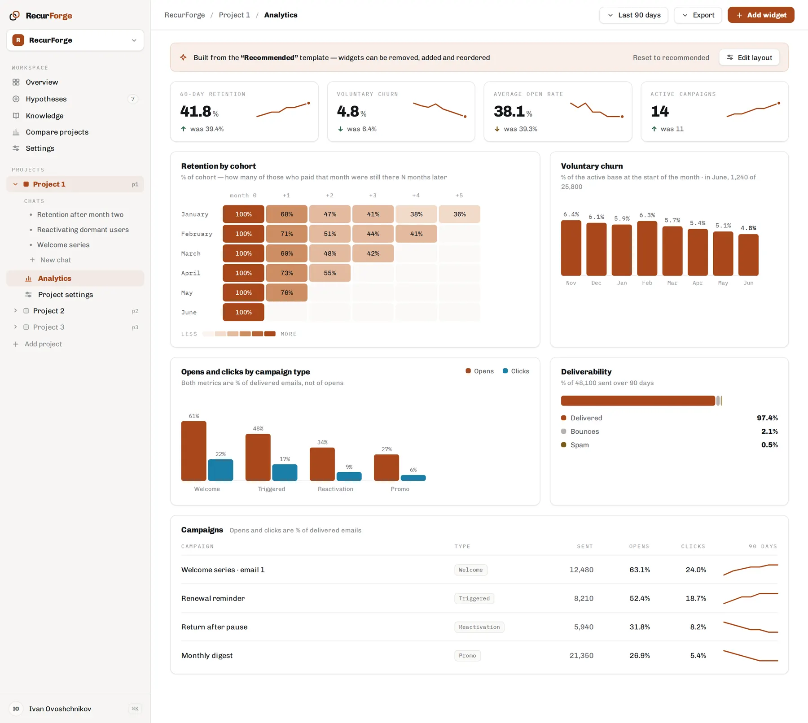

Reads your data, not your exports
One key, and it works with campaigns, journeys, segments and events directly. No CSV dumps, no screenshots pasted into a doc, no waiting on an analyst for every follow-up question.
In development · early access opening
RecurForge connects to your lifecycle platform, reads how your campaigns, journeys and cohorts are actually performing, and comes back with specific things to test — each one with the reasoning and the numbers behind it.
One email when it opens. Nothing else, ever.
Four things, in the order they happen.
One key, and it works with campaigns, journeys, segments and events directly. No CSV dumps, no screenshots pasted into a doc, no waiting on an analyst for every follow-up question.
“Retention is down” is not a finding. RecurForge compares cohorts and periods until it can point at where people actually leave — month two, day 35, the third email of the welcome series.
Every suggestion is a specific change with a reason and an expected effect, not “improve your subject lines”. Keep the ones you like as hypothesis cards and record what happened when you ran them.
A closed test becomes a record: what you tried, what happened, what it means. That knowledge stops living in one person's head — and stops leaving when they do.
Two screens from the design of the current build. The projects and numbers in them are examples, not a real account.


The work is the same whether you do it alone or run a team: decide what to improve next, and be right often enough that it compounds.
Customer.io is the integration being built now. The rest are next, and what people ask for decides the order.
Honestly, since you are being asked for an email address.
RecurForge is being built by one person, in the open. The data model, the integration and the analysis engine work; the interface is designed and going in now.
There is no public release date yet, and there will not be a fake one here. When there is a date, the people on this list get it first — and early access before it opens to anyone else.
One email when it opens. Nothing else, ever.
{kind=link}
{kind=link}